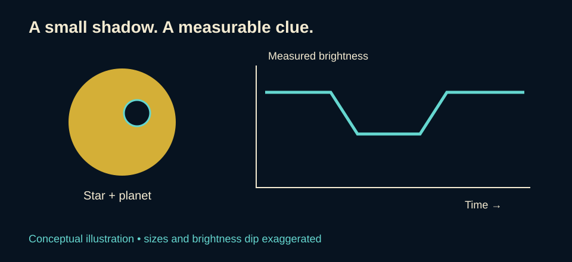
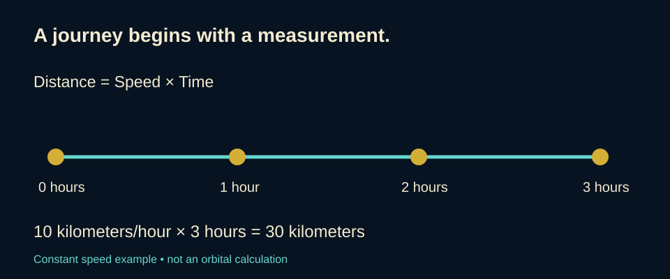

Explore and Learn · Space
From Looking Up to Reaching Beyond Earth
From the patterns in our night sky to the mathematics behind a mission, curiosity gives us a place to begin.
Choose your next expedition
125 family expeditions across STEAM: observe, build, create, measure and explain. Each includes materials, steps, a paper journal and a safety note. Signals in the Sky is Technology expedition 1.
Open a category, choose an expedition and take the instructions into the real world. These are starting activities to explore together, with no required order.
Find an article
Search a title, browse a subject, or revisit articles by the date they were added. Dates below refer to this preview, not live publication.
Europa Clipper swings past Earth for a speed boost on its way to JupiterEngineering ·
A new flying frog from Indonesia lays its eggs in jellyScience ·
Voyager 1 reaches one light-day from EarthEngineering ·
What’s Hiding Inside Webb’s Little Red Dots?Science ·
Hera: Investigating an Asteroid After ImpactScience ·
The Case of the Missing OxygenScience ·
Signals in the Sky: our aircraft-tracking projectTechnology · ELS field notes ·
First known green star: a white dwarf with a surprising glowScience ·
The sky is a viewpointScience ·
Finding a world through a tiny changeScience ·
How a telescope turns light into informationTechnology ·
Reaching beyond the Sun’s bubbleEngineering ·
Turning telescope data into musicArts ·
Katherine Johnson: mathematics with a destinationMathematics ·
Distance without a frightening formulaMathematics ·
A sky full of questions
Look up on a clear night. Which lights are nearby, and which are unimaginably distant? What can a pattern tell us? How could anyone work out a route through space?
Space exploration connects those questions. Observation supplies evidence, mathematics helps interpret it, and engineering turns a proposed journey into equipment that can make it. We can begin understanding that connection without first becoming experts.
Science
Explore all 25 Science expeditions
A new flying frog from Indonesia lays its eggs in jelly
Scientists have named a new kind of flying frog from the mountain rainforests of Sulawesi, a large island in Indonesia. Its scientific name is Rhacophorus kurniatiae. The research paper was published in the science journal Zootaxa on November 11, 2026, and the University of California, Davis, shared the news on November 17, 2026. Source Source
The frog is small and bright green. The team found thousands of them around a small seasonal mountain lake called Danau Coca-Cola, more than 6,100 feet above sea level in the Mekongga Mountains. Alan Hitch, who led the field team, remembers a big pond covered in green frogs. “You don’t really see frogs in big congregations like that,” he said. Source
Why “flying”?
Frogs in the group Rhacophorus are called flying frogs. They do not flap like birds. Their large, webbed feet help them glide from tree to tree, a bit like a paper airplane. Source
How do we know it is a new species?
Explorer, this is where the detective work comes in. The frogs were collected during expeditions from 2009 to 2013. Researchers measured 28 body features, studied the frogs’ DNA, and compared recordings of their calls with related frogs. They found pointed snouts and different calls. Source
The biggest clue was the eggs. Many related flying frogs wrap their eggs in a frothy foam nest. This frog lays its eggs in a jelly-like mass on plants that hang above or near water, and the eggs and tadpoles grow inside the gel. The paper says this way of laying eggs had not been recorded before among Sulawesi’s flying frogs. Source Source
On the outside, this frog looks a lot like other flying frogs. Scientists call a species like that, one that looks almost the same as its relatives but is different in its genes and behavior, a cryptic species. The paper names Rhacophorus boeadii as its close relative and says the DNA difference between them is small. Source Source
A name that says thank you
The Indonesian scientists named the frog for the late Hellen Kurniati, a herpetologist, which means a scientist who studies amphibians and reptiles. She worked for many years at the Museum Zoologicum Bogoriense and helped grow that science in Indonesia. Source
What is verified, and what is still uncertain
Verified: the new species was described in a peer-reviewed paper, the frogs were found at Danau Coca-Cola in the Mekongga Mountains, and the team documented the jelly egg masses, the body measurements, the DNA, and the calls. Source Source
Still uncertain: why the frog uses jelly instead of foam. The paper suggests it may help with ponds that come and go with the seasons, but that idea still needs testing. So far the paper describes the frog only from this one high lake, and scientists do not yet know how many live there. UC Davis says the area is being considered as a national park, which has not happened yet. More species from these expeditions are still being described. Source Source
Explorer’s question: Why might a jelly blanket work better than foam for eggs near a pond that dries up for part of the year?
Try it away from the screen
With a trusted adult, put a dab of clear hair gel on one plate and a spoonful of soapy foam on another. Look again after an hour, and again later in the day. Which one stays wet longer? Draw what you see in a paper journal. This is only a model, not a real frog nest, so it cannot prove what the frogs do. You do not need to post your journal anywhere.
What’s Hiding Inside Webb’s Little Red Dots?
What did Webb observe?
Webb has spotted many compact, very red objects in the early universe. Astronomers call them “little red dots.” Their appearance raises a question: what is producing the light? Source
An explanation scientists can test
In a report published on 17 September 2026, the National Astronomical Observatory of Japan describes computer simulations of rapidly growing black holes surrounded by dense gas. In the model, gas traps radiation and allows unusually fast growth. The simulated objects resemble Webb’s little red dots. Source
A simulation explores what could happen under specified conditions. Matching observations supports an explanation; it does not by itself prove that every little red dot has the same cause.
Explorer’s question: If two explanations produce a similar-looking red dot, what else could we measure to tell them apart?
Try it away from the screen
Ask a family member to place an ordinary object inside a paper bag. Describe its outline without opening it, then suggest two possible objects. What additional clue would help? This is an exercise in testing explanations, not a model of a black hole.
Hera: Investigating an Asteroid After Impact
A new viewpoint
On 5 November 2026, ESA released Hera’s first close-up of the Didymos asteroid pair, taken from about 60 kilometers away. It shows a different side of the larger asteroid, Didymos, from the one NASA’s DART spacecraft saw before striking its smaller companion, Dimorphos, in 2022. Source
Clues—and an open question
The view reveals boulders, craters and apparent grooves or ridges. Dimorphos is mostly in shadow. Scientists suspect some features on Didymos might involve material thrown from Dimorphos by the impact, but that explanation still needs investigation. Source
Different-looking photographs do not automatically show a change over time: viewpoint and lighting matter too.
Explorer’s question: How could scientists separate an impact’s effects from features that were already there?
Try it away from the screen
Sketch one side of a stone, then turn it and sketch the other side. Next, keep the stone still and change the direction of a flashlight. Record which differences came from viewpoint and which came from lighting. This observation exercise is not an impact simulation.
In its 5 November report, ESA announced further detailed images for 25 November 2026. That is an announced release date, not a finding already available in this lesson.
The Case of the Missing Oxygen
How can astronomers tell oxygen is missing if they never saw it leave? Stars make oxygen. In 37 nearby dwarf galaxies, Hubble could pick out individual stars. From their light, astronomers reconstructed when stars formed and estimated how much oxygen they had made. Comparing that estimate with observations from several telescopes, the team could account for only a small fraction inside the galaxies. Source
The team thinks winds powered by massive stars and exploding stars carried much of the oxygen away. Some oxygen has been detected in gas surrounding dwarf galaxies. Whether most of the missing oxygen stayed there or traveled farther into the space between galaxies is still an open question.
Your explorer’s question: Where would you point a telescope next to look for the oxygen, and what would you hope to find there?
First known green star: a white dwarf with a surprising glow
A green star sounds like science fiction. University of Warwick researchers report that white dwarf WD J1330+6435 would appear yellow-green to human eyes. They describe it as the first known credibly reported green star. A white dwarf is the dense remnant left when a Sun-like star reaches the end of its life. Source
What makes it green?
Rocky debris has added elements to its atmosphere. Under the intense atmospheric density, sodium absorbs a broad range of light, changing the balance of colors that escapes. Source
How do we know its color?
The team combined measured spectra—starlight separated by wavelength—with a model of human color vision. The green appearance is calculated from those measurements; it is not a color someone saw with unaided eyes from Earth. Source
Explorer’s question: How can the colors missing from light help us learn what an atmosphere contains?
Read the University of Warwick report · Find the research paper
The sky is a viewpoint
A constellation can look like a picture, but its apparent pattern does not mean all its stars sit together at the same distance. Our view compresses depth into a scene on the sky. Cultures have given star patterns different names and meanings; no single interpretation represents every community. Modern astronomy recognizes 88 constellations. Source
Our place on Earth and the season also affect what we can see. NASA describes how the view changes as Earth travels around the Sun and how observers in different hemispheres see different portions of the sky. Source

Watch Orion turn sideways
NASA’s The True Shape of Orion begins with the familiar view from Earth, then circles around the stars to reveal their three-dimensional distribution. This is a scientific visualization, not footage from a camera traveling between the stars.
Watch the rotating Orion visualization on NASA · Source and video credit
Three belt stars, three distances
These rounded estimates come from NASA’s introductory Orion article. They illustrate depth rather than provide precision measurements; published stellar-distance estimates can differ and be revised. Miles are rounded conversions using approximately 5.88 trillion miles per light-year. Source
| Belt star | Light-years from Earth | Miles from Earth |
|---|---|---|
| Alnitak | 800 | 4.7 quadrillion |
| Mintaka | 900 | 5.3 quadrillion |
| Alnilam | 1,300 | 7.6 quadrillion |
In these estimates, Alnilam is roughly 500 light-years farther from Earth than Alnitak. That difference compares their distances from Earth; it is not the distance between the stars themselves. Their different directions in the sky also matter when calculating the distance between them.
A pattern and a physical group are different
Think of the Orion photograph as a view from one observing location. It shows where the stars appear in the sky; the picture alone cannot tell you their distances from Earth. Recognizing a pattern is a starting point for investigation, not a measurement of its depth. Source
Finding a world through a tiny change
An exoplanet is a planet outside our solar system. One way to detect one is to observe a transit: a planet passes in front of its star from our viewpoint and blocks a small part of the starlight. Instruments measure the resulting dip in brightness. Source
The discovery is often an interpretation of measurements rather than a photograph showing a planet’s surface. Mathematics helps describe how much the brightness changes. A transit also requires the right viewing alignment; a planet can exist without crossing its star’s face as seen from Earth. Source
Knowing that a planet exists does not establish that life exists there. Those are different questions, requiring different evidence.

A dip is a clue, not proof of a planet. Astronomers check whether another explanation, such as two stars eclipsing each other, could cause the signal, and use follow-up observations to investigate. Source

Technology
Explore all 25 Technology expeditions
Explore our Raspberry Pi receiving setup, recorded observations, and the questions we are investigating.
How a telescope turns light into information
A space image begins with light reaching an instrument. Webb’s primary mirror gathers infrared light and sends it toward a secondary mirror, which directs it into the scientific instruments. Different components select and record the light for different kinds of investigation. Source
From light to a measurement
Detectors turn absorbed light into electrical charges. The information can then be stored digitally and transmitted to Earth. Cameras record an image; spectrographs spread light into its wavelengths so researchers can measure brightness across a spectrum. These are complementary ways to study a target. Source
A filter admits a chosen range of wavelengths. A coronagraph blocks a bright star’s light so fainter nearby material can become easier to detect. Webb’s NIRCam and MIRI instruments include coronagraphs. Choosing the instrument and observing mode is part of answering the scientific question. Source
Why are the images colorful?
The HIP 65426 b image in Science uses different visible colors to represent infrared observations. The colors distinguish wavelength bands; they do not show how the scene would look to human eyes. Its white star symbols mark the host star’s removed position. Source
Technology also depends on people who check its results. Katherine Johnson’s verification of computer calculations, described in Mathematics, offers a historical example of that responsibility. Source
Reading an image: Look for the instrument, wavelength, processing explanation, and credit. Those details tell you what kind of evidence you are seeing.
Engineering
Explore all 25 Engineering expeditions
Europa Clipper swings past Earth for a speed boost on its way to Jupiter
Hello, Explorer. A giant NASA spacecraft is about to pay Earth a quick visit. Europa Clipper is the largest spacecraft NASA has launched into deep space. It weighs about 12,800 pounds (6,000 kilograms), and it is on a 1.8 billion-mile (2.9 billion-kilometer) trip to Jupiter. Source Source
On Thursday, December 3, 2026, Europa Clipper will pass about 1,950 to 2,133 miles (3,140 to 3,450 kilometers) from Earth. Its closest approach will be west of Africa at 3:14 p.m. Eastern time (2:14 p.m. Central time). Source
Why come back home?
The trick is called a gravity assist. As the spacecraft swoops past, Earth’s gravity pulls it along a curve and then lets it shoot back out, moving faster and in a slightly new direction. That boost saves propellant, the fuel the spacecraft would otherwise need to burn. Europa Clipper already did this once at Mars in March 2025, when it passed 550 miles (884 kilometers) above the Red Planet. Source
A practice run
The flyby is also a practice run. All nine of Europa Clipper’s science instruments will be switched on. Scientists will point them at Earth, a world they already know very well, and compare the new readings with Earth data they already have. That helps them fine-tune the tools before the real work begins. Source
One tool, a magnetometer, measures magnetic fields. Another, called E-THEMIS, sees heat in infrared light and will scan Earth every eight hours as the spacecraft gets closer. Source
Europa Clipper is scheduled to start orbiting Jupiter in April 2030. Then it will make many flybys of Europa, an icy moon that scientists think hides a huge ocean under its frozen shell. Source Source
What is verified, and what is still uncertain
Verified: NASA says the Earth flyby happens on December 3, 2026, with closest approach west of Africa at 3:14 p.m. EST. NASA says all nine science instruments will be on and collecting data during the flyby. NASA says the spacecraft is scheduled to begin orbiting Jupiter in April 2030. Source Source
Still uncertain: NASA gives the closest distance as a range (about 1,950 to 2,133 miles), not one exact number. Scientists believe Europa has an ocean under its ice. The magnetometer aims to help confirm it. Nobody knows yet whether that ocean has the ingredients for life. Finding out is the reason for the trip. Source Source
Can you see it?
NASA says people near the flyby path, mainly in southern Europe and Africa, may spot it with fairly large hobby telescopes. Source
Most families in North America will follow along online.
Explorer’s question: If you could send one tool to Europa, what would you want it to measure?
Try it away from the screen
With a trusted adult, hold a ball on a string and let a helper give it a gentle push so it swings past your hand. Watch how its path bends. Write what you notice in a paper journal. This is only a model of a bent path, so it cannot show what the spacecraft will do. You do not need to post your journal anywhere.
Voyager 1 reaches one light-day from Earth
On Wednesday, November 18, 2026, at about 4:16 a.m. Central Time, NASA’s Voyager 1 reached one light-day from Earth. NASA’s news release states the time as 2:16 a.m. Pacific Standard Time (5:16 a.m. Eastern Standard Time). The mission distance page states 2:16:07 a.m. Pacific Standard Time, which is 4:16:07 a.m. Central Standard Time. Source Source
A light-day is a distance, not a day on the calendar. It is how far light travels in 24 hours. NASA’s news report rounds that distance to about 16.1 billion miles (25.9 billion kilometers). The distance page gives 16.094 billion miles (25.902 billion kilometers). NASA calls Voyager 1 humanity’s farthest-flying spacecraft. Source Source Source
What is a light-day?
Light is the fastest traveler we know. In empty space it moves about 186,000 miles (about 299,000 kilometers) every second. Radio waves are a kind of light we cannot see, and they travel at that same speed. Give light one whole day, and the distance it covers is one light-day. NASA also writes that distance as 16,094,799,096 miles (25,902,068,356 kilometers). The rounded figures above are the same distance with fewer digits. Source Source
That is why a message takes a whole day. Voyager 1 is about one light-day away, so a radio hello sent from Earth is still on its way the next day. A reply needs about another day to come back. NASA says the team heard from the spacecraft about 24 hours after the milestone, early on Thursday, November 19. Suzanne Dodd, Voyager project manager at the Jet Propulsion Laboratory, says signals now take 24 hours to reach the spacecraft and 24 hours to reach Earth. Source
For a smaller example of the same idea, see Distance without a frightening formula. Sunlight takes about eight minutes to reach Earth. A light-day is that same kind of measurement, stretched across 24 hours.
How do we know?
Voyager 1 launched on September 5, 1977. By this mark it had been traveling for more than 49 years. Source Source
NASA also says the team had not received Voyager 1’s science and engineering data since November 14. The spacecraft was still sending a carrier signal, a steady radio tone that shows the antenna is pointed toward Earth and the transmitter is working. Engineers used that tone, together with calculations of the spacecraft’s path, to confirm the distance. They are still studying why the detailed data stopped. The distance and the missing data are different questions. A path calculation can place the spacecraft at one light-day even while the science numbers are not arriving. Source
Science News published a report on November 18, 2026, by Mandana Tadayon, titled “Voyager 1 reaches a historic milestone: one light-day from Earth.” It describes Voyager 1, launched in 1977, as farther than any other human-made object and at this milestone. The measurements in this article follow the NASA pages. Source
Explorer’s question: If a reply takes two days, what would you put in the first message so the answer is worth the wait?
Try it away from the screen
With a trusted adult, stand at opposite ends of a room. Walk a short note from one end to the other and time the trip. Write the time in a paper journal, then write what would change if that walk took a whole day and the answer took another day. You do not need to post the note or the journal anywhere.
A picture, and a video

Voyager 1 Reaches One Light-Day from Earth | Atlas Explains
The visuals, voice, and music are AI-generated. This is an Explorers Legacy Studios™ explanation of the milestone. Not a NASA production; no NASA endorsement implied. The measurements above come from the sources, which you can read without the video. Pressing play loads YouTube. Until then, this page does not contact YouTube. YouTube has its own privacy practices. A trusted adult can open the link instead.
Read NASA’s November 19 report · See NASA’s Voyager distance tracker · Read NASA’s explanation of a light-day · Read the Science News report
The earlier engineering article, Reaching beyond the Sun’s bubble, explains the heliopause, the antenna, and the Golden Record. Voyager 1 keeps traveling, and a message home still takes about a day.
Reaching beyond the Sun’s bubble
The Voyager spacecraft crossed the heliopause, the boundary between the Sun’s outward-flowing solar wind and the surrounding interstellar environment. Voyager 1 crossed in 2012 and Voyager 2 in 2018. These were robotic journeys into interstellar space. Source
“Interstellar space” and “outside the entire solar system” are not interchangeable descriptions. NASA explains that the Voyagers can be beyond the heliopause while still far from the solar system’s outer reaches. This distinction keeps a remarkable achievement precise rather than making it sound larger than the evidence supports. Source
Keeping the spacecraft pointed
A spacecraft must do more than reach a distant place. It needs to send useful information home. Voyager’s orientation-control system keeps its high-gain antenna pointed toward Earth. Pointing is therefore part of communication, not simply a matter of where the spacecraft is traveling. Source
A mission with an energy budget
The Voyagers use three radioisotope thermoelectric generators apiece. These systems turn heat from radioactive decay into electricity. NASA explains that, as available electrical power declines, some spacecraft loads must be switched off so demand does not exceed supply. Source
That creates a design tradeoff: an instrument may be scientifically useful but still require power the spacecraft can no longer spare. The engineering challenge is to preserve a useful mission within its remaining resources. This is a general explanation of the constraint, not a claim that every original instrument is still operating. Source
Engineering connection: The antenna, control system, power supply, and instruments work together. A measurement has little value to a reader on Earth if the spacecraft cannot send it back.

A spacecraft you can recognize

A message from Earth: the Golden Record
Each Voyager carries a Golden Record: a 12-inch disc of gold-plated copper, containing sounds and images chosen to represent life and culture on Earth. It is a time capsule intended for a possible distant finder, not evidence that another civilization has received it. Source

What do the markings mean?
The cover is an instruction sheet expressed through diagrams and numbers. The upper-left drawing shows the record and stylus, with playback timing written in binary. The upper-right drawings explain how the recorded signals can be reconstructed into pictures; a test circle helps check the picture’s proportions. Below, a pulsar map identifies the solar system’s location relative to 14 pulsars. A hydrogen-atom diagram provides a physical reference for the time units. These markings describe how the designers hoped a finder could decode the contents. Source
A separate handwritten inscription on the record reads: To the makers of music – all worlds, all times
. It connects this engineering project with music and human culture. Source
Examine NASA’s explanation of each cover marking · View the inscription in JPL’s historical article
One light-day from Earth
On November 18, 2026, Voyager 1 reached one light-day from Earth. The October 8 preview of this article described that moment as still ahead. The distance, the day-long radio delay, and how NASA confirmed the mark are explained in Voyager 1 reaches one light-day from Earth. Source
Arts
Explore all 25 Arts expeditions
Turning telescope data into music
An astronomical image can communicate through color and shape. Sonification offers another route: representing data through sound. Scientists and musicians choose rules that connect features of the data with qualities such as pitch and loudness. Source
Listening to the Cosmic Cliffs
NASA’s Cosmic Cliffs sonification scans a Webb image from left to right. Brighter areas become louder, and vertical position affects pitch. A bright feature high in the picture is represented differently from one lower down. The changing sound helps convey the image’s structure. Source
These are composed representations of observations, not sounds that a microphone recorded in the nebula. The mapping must be explained: a high note does not automatically mean a star is hot, and a loud note does not automatically mean it is nearby. Its meaning depends on the chosen rule. Source
Art as a way to share evidence
NASA describes a collaboration involving scientists, musicians, and a member of the blind and visually impaired community. Sound can provide another way to explore information usually presented visually. The artistic choices serve communication while remaining tied to the data. Source
Stories give patterns meaning, while measurements help explain the objects that form them. A constellation drawing and a sonification both require us to ask what is being represented and how to interpret it.

Listen and watch on NASA’s sonifications page — includes explanations of the sound mappings.
Mathematics
Explore all 25 Mathematics expeditions
Katherine Johnson: mathematics with a destination
A “human computer” was a person who performed mathematical calculations. Johnson used a mechanical calculator and her understanding of mathematics to turn flight-test measurements into information engineers could use. After joining Langley in 1953, she analyzed aircraft tests and helped investigate a crash involving wake turbulence—the disturbed air left behind an aircraft. Source
Her work later helped take people into space. She analyzed Alan Shepard’s 1961 flight path. Before John Glenn’s 1962 orbital flight, he asked her to check the electronic computer’s results using the same equations on her mechanical calculator. For Apollo, she worked on trajectories and calculations that helped the lunar lander meet the spacecraft orbiting the Moon. Accuracy meant helping astronauts reach their destination and return safely, as part of a larger team. Source
Johnson began work at Langley in 1953 in the segregated West Area Computing section, led by Dorothy Vaughan. Her history includes both scientific achievement and the racial barriers within the institutions where that work took place. Source
A trajectory is the path an object follows. To plan one, a team needs more than a destination: where the spacecraft starts, how it moves, and when events must happen all matter. Johnson’s story makes mathematics concrete. A number can represent a position, a speed, or a moment on which a mission depends.

Distance without a frightening formula
A light-year measures distance, despite the word “year.” It is how far light travels in one year. Astronomers use it because ordinary distances become cumbersome on cosmic scales. Source
How fast does light travel?
In empty space, light travels about 186,282 miles every second—or approximately 671 million miles per hour. In metric units, its speed is exactly 299,792,458 meters per second, about 300,000 kilometers per second. Source
There are 3,600 seconds in an hour. To change miles per second into miles per hour, multiply by 3,600: 186,282 × 3,600 = 670,615,200 miles per hour. That calculation starts with a rounded speed; rounding the result gives about 671 million mph. The speed stays the same—we are simply describing it using a different unit of time.
Even at that speed, sunlight takes about eight minutes to reach Earth. A light-year is the distance light covers in a year: about 5.88 trillion miles. When you see a star ten light-years away, the light reaching you has traveled for about ten years. Looking farther into space also means seeing light from farther back in time. Source
Here is the underlying idea in everyday terms: distance = speed × time.
An original simplified example: an object moving at a steady 10 kilometers per hour for 3 hours travels 30 kilometers. That is arithmetic with a purpose. Real spacecraft planning involves much more: this example assumes constant speed and does not model gravity, orbital motion, or changing direction.
Mathematics can begin as a way to answer a question, rather than a page of unexplained symbols.

Units tell us what a number means
In the example above, “per hour” pairs with hours, leaving kilometers. If the time is given in minutes, first express it in hours before multiplying by a speed measured in kilometers per hour. For example, 30 minutes is half an hour: at a steady 10 kilometers per hour, the distance is 5 kilometers. This is an original arithmetic example, not a mission calculation.
Checking the result can be simple: half the time at the same speed should give half the distance. Naming the assumptions and checking whether an answer makes sense are useful habits before a problem becomes complicated.
Curiosity becomes a method
The route from a star pattern to a spacecraft is not one person’s story or one subject’s accomplishment. It joins observation, instruments, design, interpretation, and communication.
For readers who never liked mathematics, Katherine Johnson provides a welcoming starting point: begin with a real question. What path should we follow? What measurement would help? How can we check the answer? The mathematics then has somewhere to take us.
Explore further through the original references on our Sources & Works Cited page.